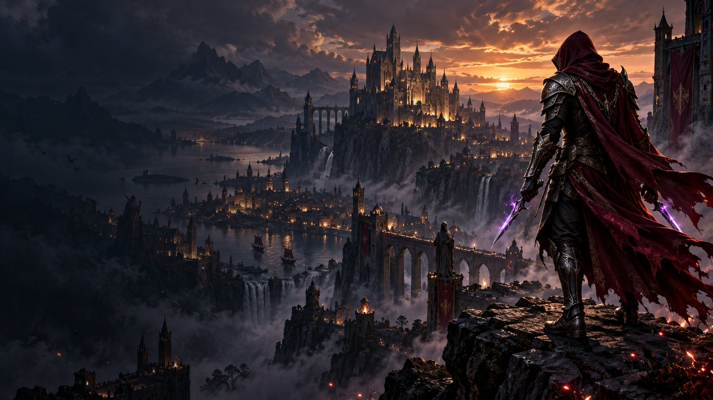
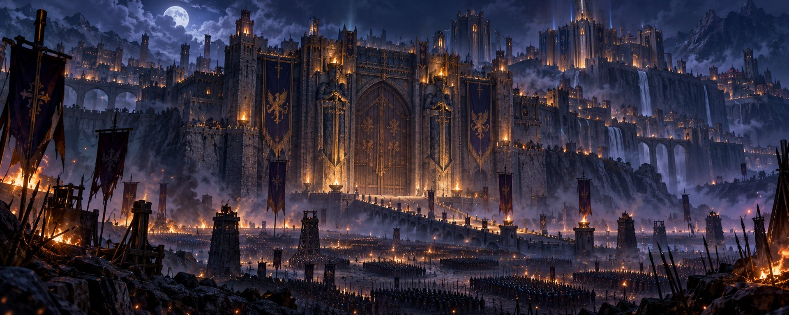

01 / ASSASSIN
Gölgelerden gel.
Assassin tutkusu, Shard'lar ve karakterin dönüş yolculuğu.

Bir zamanlar bıraktığımız o dünya, hâlâ içimizde. FvGuMuS yıllar sonra USKO'ya dönüyor; yeni macera hep birlikte başlıyor.
Selam, ben FvGuMuS. Knight Online'a 2009'da ara verdim. Moradon'un kalabalığı, savaşların heyecanı ve o unutulmaz dostluklar hep aklımın bir köşesinde kaldı.
Şimdi yeniden USKO'dayız. Eski anıları hatırlayıp yeni maceralar biriktirmek için bu yolculuğu YouTube'da birlikte yaşayacağız.
“Eski günleri hatırlayan herkese: Hoş geldiniz.”
Savaş meydanından eski dostluklara, dönüş yolculuğumuzun üç yüzü.

Assassin tutkusu, Shard'lar ve karakterin dönüş yolculuğu.

USKO dünyasında yeni karşılaşmalar ve unutulmaz oyun anları.

Yıllar sonra aynı heyecanla buluşan oyuncular ve yeni hikâyeler.
FvGuMuS'un USKO'ya dönüşünü, oyun anlarını ve yeni maceralarını kanalda takip et. Sen de eski günleri yorumlarda anlat.
Videolar ve yayınlar için doğrudan kanalı ziyaret et ↗
“Bazı maceralar
asla unutulmaz.”
2009'da verilen ara bitti. Şimdi yeni anılar biriktirme zamanı.
Kanala katıl ↗Knight Online'ı ilk keşfettiğin zamanı hatırlıyor musun? Kendi dönemini seç ve anılarını YouTube kanalımızda yorumlara bırak.
2009'da Knight Online'a ara veren ve şimdi USKO'ya dönerek yolculuğunu paylaşan bir oyuncu.
Sayfadaki YouTube butonları seni doğrudan kanala götürür.
Hayır, burası FvGuMuS'un kişisel kanal ve topluluk sayfasıdır.
Buradan seçimini yap; eski günleri yorumlarda birlikte konuşalım.
YouTube'da buluşalım ↗